Microsoft CAS Plugin for Log Shipper
This document explains how to configure the Microsoft CAS integration with the Log Shipper module of the Netskope Cloud Exchange platform. This integration allows fetching behavior scores of users from your Security Advisor instance.
To complete this configuration, you need:
A Netskope Tenant (or multiple, for example, production and development/test instances).
A Netskope Cloud Exchange tenant with the Log Shipper module already configured.
A Microsoft CAS instance.
Configure the Microsoft CAS Data Source.
Configure the Microsoft CAS plugin.
Create Log Shipper Business Rules.
Create Log Shipper SIEM mappings.
Validate the plugin.
Go to your Microsoft CAS instance at:
https://<instance-name>.portal.cloudappsecurity.com/.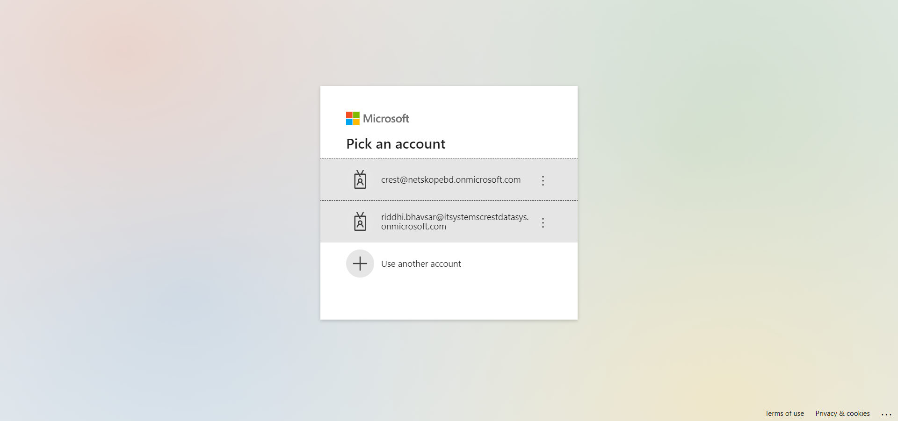 Log in to your CAS instance.
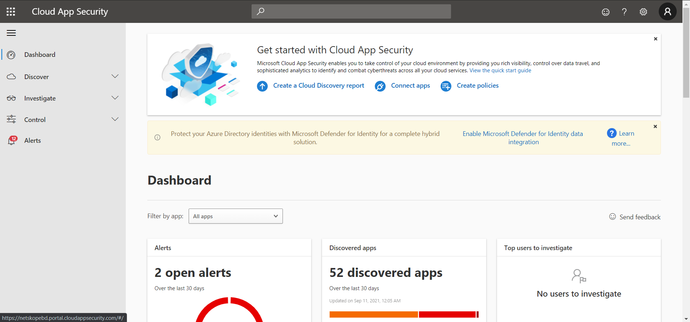 Click Settings and then click Log Collectors.
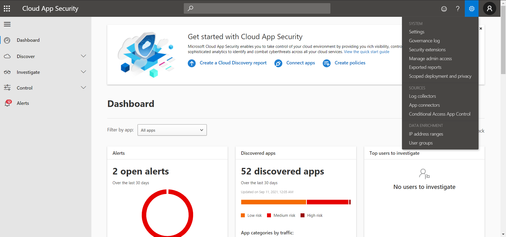 Click Add data source.
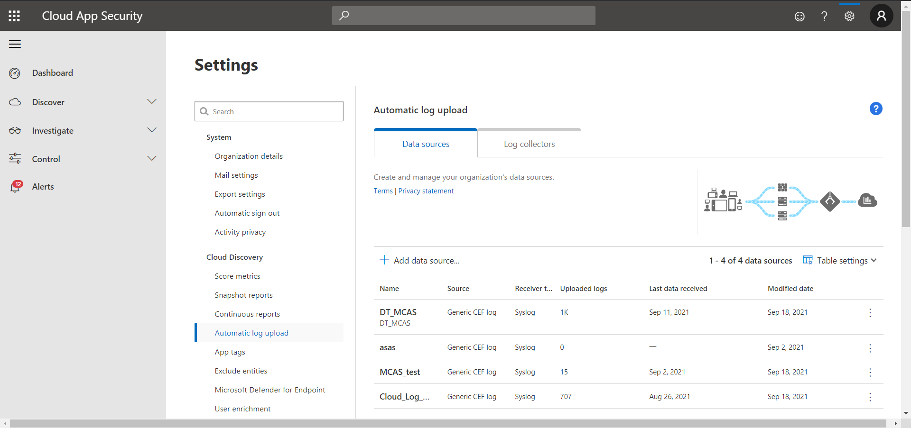 Enter a name and select Source and Receiver type, and then click Add.
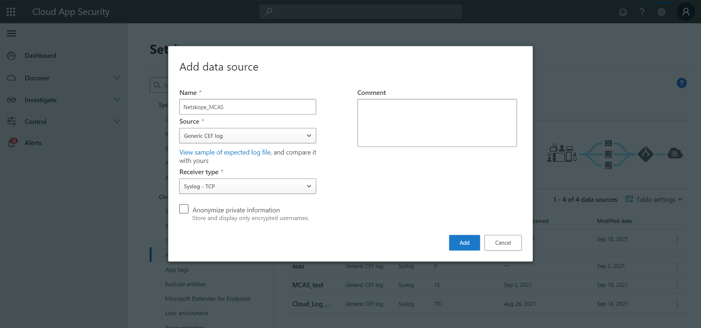
In Cloud Exchange, click Settings and then Plugins.
Select the Microsoft Cloud App Security box to open the plugin creation dialog.
Enter a Configuration Name.
Select the valid Mapping. (Default Mappings for all plugins are available).
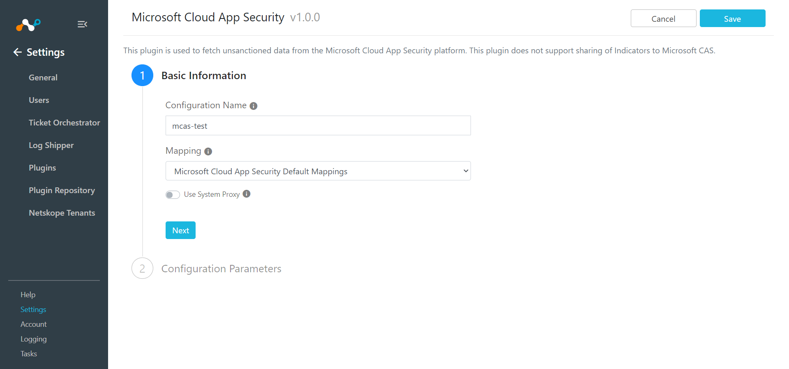 Click Next.
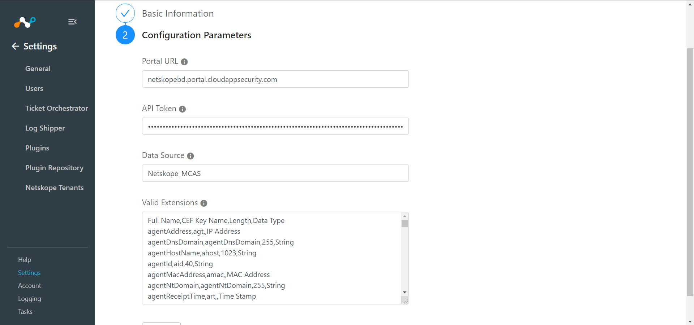 Enter the Portal URL, API Token, and Data Source. Enter valid extensions if you have other than the default one.
Click Save.
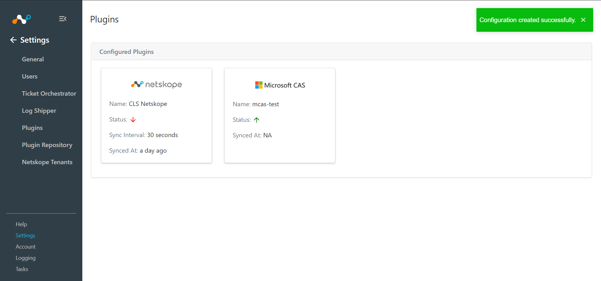
Go to Log Shipper > Business Rules.

Click Create New Rule.

Enter a Rule Name and select the filters to use.
Click Save

Go to Log Shipper > SIEM Mappings and click Add SIEM Mapping.
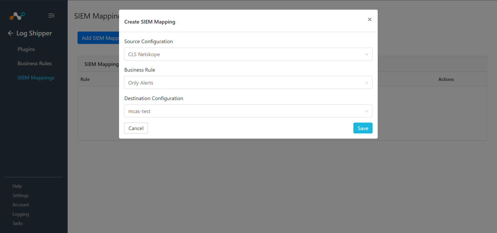 Select a Source Configuration, Business Rule, and Destination Configuration.
Click Save.

To validate the plugin workflow, you can check from Netskope Cloud Exchange and and your MCAS instance.
To validate from Netskope Cloud Exchange:
Go to Logging.
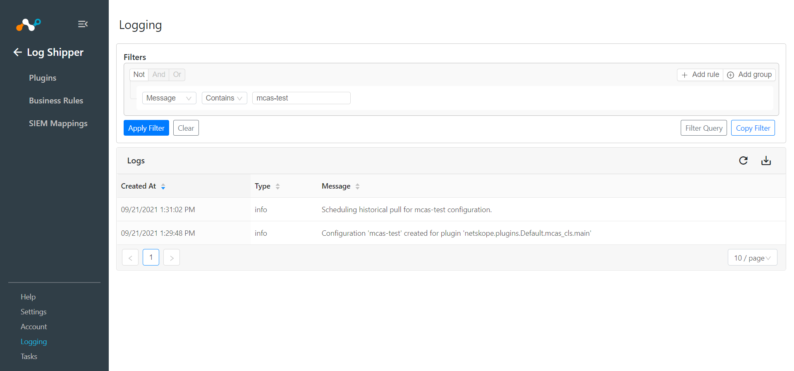
To validate from the MCAS instance:
Go to Setting Governance Log.
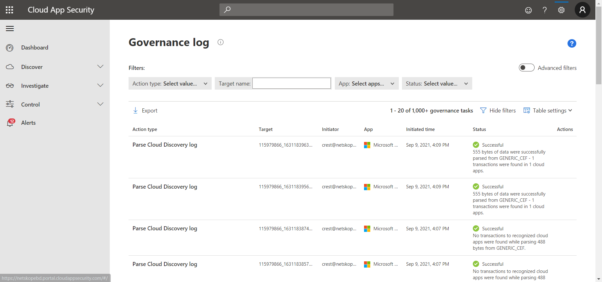